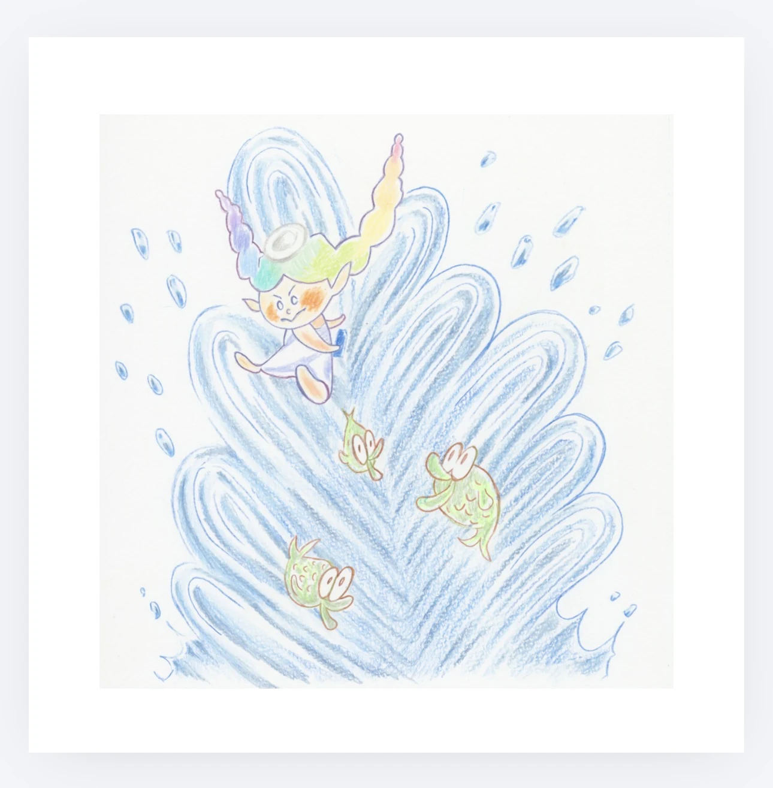

PICTURE BOOK
てんしのクレヨン
約10年の時を経て、一冊の絵本になりました。
TEN YEARS
10年越しにかなった、絵本になる夢
『てんしのクレヨン』は、ふじもとれいかさんが小学生のころに書いた物語です。コンクールで受賞したあとも、地域の薬局に原稿が飾られ、「いつか絵本になったらいいね」とたくさんの人に見守られてきました。
一度は絵本化をお願いしたこともありましたが、その時は実現しませんでした。月日が流れ、セキマコトが原稿と出会い、作画を担当することに。物語が生まれてから約10年、2026年についに一冊の絵本として出版されました。


この一冊を見守ってくださった皆さまへ
子どものころに生まれた物語が、長い時間をかけて人から人へ大切に受け継がれ、ようやく一冊の絵本になりました。
読み聞かせを続けてこられたご家族、原稿を大切に飾ってくださった方々、「いつか絵本になったら」と願ってくださった皆さま。その想いも一緒に、本の中に残っていったように感じています。
この物語が、これから新しい読者のもとへ届いていきますように。